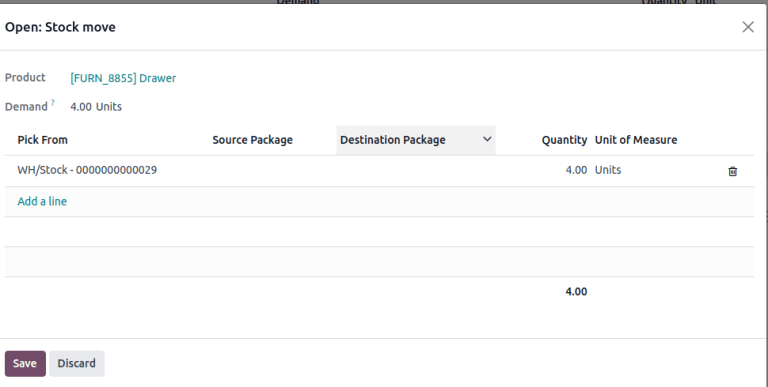
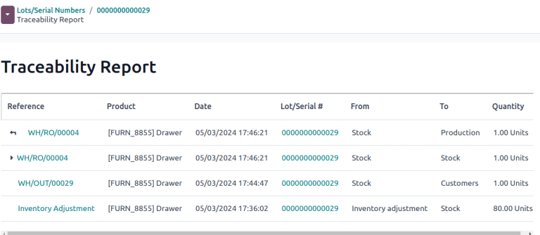

批次号码¶
*批次*是在 Odoo 中识别和追踪产品的两种方法之一。它们通常代表接收、存储、运输或内部制造的特定批次产品。
制造商为具有共同属性的产品组分配批号，便于对产品生命周期进行端到端追溯。
批次对管理大量生产或已接收产品非常有用，有助于追踪产品的组别，特别是在产品召回或 过期时。
启用批次和序列号¶
要使用批次追踪产品，请启用*批次和序列号*功能。进入 ，向下滚动到 可追溯性 部分，勾选 批次/序列号 旁边的复选框。然后，点击 保存。

按批次追踪¶
激活 批次和序列号 功能后，配置单个产品以使用批次进行追踪。要执行此操作，进入 ，选择要配置的产品。
在产品表单中，转到 库存 选项卡。在 可追溯性 部分，选择 追踪 字段中的 按批次 选项。现在，新的或现有的批号可分配给新收到或生产的该产品批次。
参见
重要
如果产品在按批次或序列号激活追踪之前有库存，则会出现警告信息。使用 库存调整 为现有库存产品分配批号。
为发货和收货分配批次¶
On receipts¶
可直接在收据上为进货分配新的或现有的批号。
首先，进入 应用程序，为按批号跟踪的产品创建并确认 <https://www.youtube.com/watch?v=o_uI718P1Dc>`_ PO 。然后，点击页面顶部出现的 收据 智能按钮，导航到仓库收据表单。
注解
或者，进入 应用程序，点击 收据 看板卡，选择所需的收据，从而导航到现有收据。
重要
在分配批号前点击 验证 会引发错误，表明在验证收据前**必须**分配批号。
在收据表格的 操作 选项卡的产品行中，选择按批号追踪的产品右侧的 |列表| 图标。
打开 打开：库存移动 弹出窗口，在此分配 批次/序列号 和 数量 。
分配批号的两种方法： 手动**和导入。
手动分配¶
要手动分配批号，请点击 添加行。输入 批次/序列号、:guilabel:`存储至`批次位置、:guilabel:`数量`和 :guilabel:`目的地包装`（如有）。
注解
要分配多个批号或存储到多个位置，请点击 添加行，然后输入新的 批次/序列号，以获得更多数量。重复上述操作，直到 数量`列中的总数与顶部的 :guilabel:`需求 相匹配。

导入批次¶
在弹出的 打开：库存移动 窗口中，点击 导入序列/批次，然后在 批次/序列号 字段中粘贴批量编号。

List of lot numbers copied on Google spreadsheets.¶
Lot numbers pasted to the “Lots/Serial numbers” field, in the Import Lots pop-up window.¶
Tick the Keep current lines checkbox to generate additional lot numbers in the Open: Stock move pop-up window. To replace the lot numbers in the list, leave the Keep current lines option unticked.
最后，点击 生成。
Once all product quantities have been assigned a lot number, click Save to close the pop-up window. Then, click Validate on the receipt form.
On delivery orders¶
Odoo makes it possible to specify which lot numbers for a product are chosen for outgoing shipment on a delivery order form.
首先，在 应用程序中创建或选择一个现有报价。确认|SO|后，交货`智能按钮可用。点击 :guilabel:`送货 智能按钮，查看特定 SO 的仓库表格。
注解
或者，进入 应用程序，点击 送货订单 看板卡，导航到交货单。
点击 送货 智能按钮，打开交货订单表，在此选择交货批号。在 操作 选项卡中，点击按批号追踪的产品右侧的 (list) 图标。点击该图标会弹出一个 打开：库存移动 弹窗。
在弹出窗口中，所选批号及其存储位置显示在 选自 栏中，同时显示从该特定批次中提取的全部 数量 （如果该特定批次有足够库存）。
如果该批次的库存不足，或者应从多个批次中提取 需求 的部分数量，则直接更改 数量。
注解
根据所选的移除策略 FIFO（先进先出）、LIFO （后进先出），或 FEFO（先到期先出），交货订单自动选择的批次会有所不同。这也取决于订购数量，以及该批次的库存数量是否足以完成订单。
参见
重复上述步骤，选择足够的批次以满足 需求，然后点击 保存 关闭弹出窗口。最后，单击 DO 上的 验证 按钮交付产品。
批次管理¶
通过 在 批次/序列号 仪表板中管理和查看产品的现有批号。
默认情况下，批号按产品分组，选择每个产品的下拉菜单可显示现有批号。选择一个批号，可以 修改或添加与该批号相关联的详细信息。也可以通过点击 新建 按钮，从该页面 创建 批号。
在**批次/序列号**仪表板上显示按产品分组的批次号。¶
修改批次¶
点击 批次/序列号 仪表板上的批次，会显示一个单独页面，在此可提供有关批次的其他信息。
小技巧
Odoo 会自动生成一个新的 批次/序列号 以跟随最新的编号。不过，也可以对其进行编辑，只需点击 批次/序列号 字段下的一行，并将生成的编号更改为任何所需的编号即可。
在批次表格中，可以修改以下字段：
批次/序列号：更改与:guilabel:`产品`相关联的批次号。
内部参考：记录仓库内部使用的不同于供应商制造商使用的其他批次/序列号。
公司：指定提供批号的公司。
说明：在此文本字段中添加有关批次或序列号的额外详细信息。
重要
在现有批次中，产品`和 :guilabel:`现有数量 字段**不能**修改，因为批次编号与现有库存移动相关联。
参见
添加属性¶
要为批号添加自定义字段以增强可追溯性，有两种方法可以在批号表单上添加属性：
点击页面左上角的 （cog） 图标，然后从下拉菜单中选择 添加属性。
点击位于现有字段下方的 :guilabel:`添加属性`按钮。
名称和 配置新字段。完成后，在新字段中输入属性值。
Example
新增属性 木材类型。其值记录为 樱桃木。

参见
配置自定义属性
产品的预留批号¶
要为产品创建批号，首先进入 ，然后点击 新建。
重要
创建批号是为产品保留批号，但**不会**分配批号。要分配批号，请参阅 在收据上指定批号 部分。
小技巧
虽然 Odoo 会自动生成一个新的 批次/序列号 以跟随最新的编号，但可通过点击批次表单上 批次/序列号 字段下的行并更改生成的编号，将其编辑并更改为任何所需的编号。
生成新的 批次/序列号 后，点击 产品 旁边的空白区域，显示一个下拉菜单。从该菜单中选择要分配新编号的产品。
Example
为产品 黑色抽屉 创建批号 000001。
在创建、保存新批号并将其分配给所需产品后，该批号会保存为与产品相关联的现有批号，在 为收据上的产品分配批号 时或进行库存调整时可以选择该批号。
Example
创建批号后，在分配 库存调整 页面上的批号时，000001 将显示为 抽屉黑色 选项。

管理不同操作类型的批次¶
默认情况下，只能在接收产品时创建新的批次，而不能使用现有的批次号。对于销售订单，只能使用现有的批号，不能在发货单上创建新的批号。
要更改在任何操作类型上使用新（或现有）批号的功能，请转到 ，然后选择所需的操作类型。
在操作类型表单的 批次/序列号`部分，勾选 :guilabel:`新建 复选框，以便在此操作类型中创建新的批号。如果只能选择现有批号，请选择 使用现有批号。

小技巧
对于涉及按批次跟踪的产品的仓库间转移，启用 使用现有批次/序号 仓库收据选项可能很有用。
追溯¶
制造商和公司可以参考可追溯性报告，了解产品的整个生命周期：产品从哪里来、何时到达、在哪里储存、送货对象和时间。
要查看产品的完整可追溯性或按批次分组，请转到 。这样就会显示 仪表板。
默认情况下，这里将列出已分配批号的产品，并可展开以显示这些产品已分配的批号。
要按批次分组，首先移除 搜索… 栏中的任何筛选器。然后，点击 （向下键） 图标，打开包含 筛选器、分组方式 选项和 收藏 的下拉菜单。在 分组方式 部分，点击:guilabel:添加自定义组 选项，并从下拉菜单中选择 批次/序列号。
这样做可以重新组织页面上的所有记录，显示所有现有批次和序列号，并可扩展以显示具有该分配编号的产品的所有数量。

追溯报告¶
要查看批号的完整库存移动报告，请从 批次/序列号 仪表板中选择批号行。在批号表单中，点击 可追溯性 智能按钮。
参见